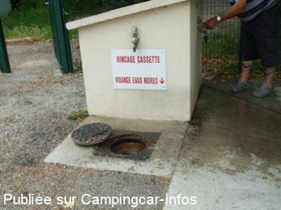
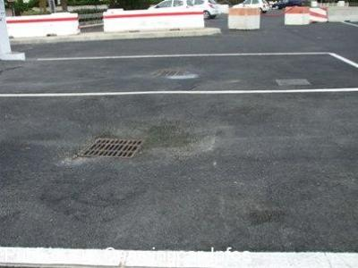
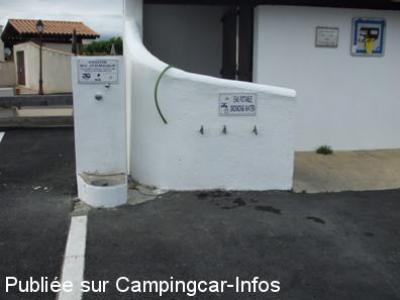
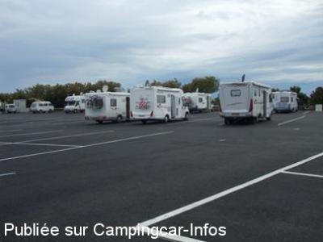
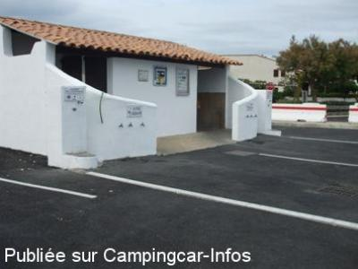

ASN = Aire de services avec stationnement nuit possible de :
SAINTES MARIES DE LA MER
(N° 320)
Accès/adresse :
Avenue d'Arles D570
13460 SAINTES MARIES DE LA MER
13460 SAINTES MARIES DE LA MER
Latitude : (Nord) 43.45524° Décimaux ou 43° 27′ 18′′
Longitude : (Est) 4.42738° Décimaux ou 4° 25′ 38′′
Tarif : 2015
Stationnement, C-C 7,50 mètres : 12 €
Stationnement, C-C + 7,50 mètres avec ou sans remorque : 20 €
Un agent passe pour encaisser
Type de borne : Artisanale
Services :


Commerces et laverie
Près des commerces et centre ville
Autres informations :
Ouverte toute l'année
100 emplacements, goudronnés, délimités.
Stationnement limité 48 H

Le 04/06/2012 par Louisette

Le 04/06/2012 par Louisette

Le 04/06/2012 par Louisette

Le 04/06/2012 par Louisette

Le 04/06/2012 par Louisette
de
jp
le 20/01/2016 :
Dernier passage 1ere semaine de janvier.
J'ai toujours trouvé de la place sur cette aire, propre, goudronnée et avec l'eau gratuite ( à certaines heures ) .C'est le côté positif.
Cependant, je trouve que 12 euros c'est un peu cher. De plus, malgré un nettoyage journalier des toilettes, les urinoirs hommes sont obsolètes et donc impossibles à tenir propres.C'est sale...
De plus, cet hiver beaucoup de candélabres sur la promenade le long de la plage étaient cassés. Surement du vandalisme et pas la faute à la mairie mais cela enlève du charme à cette ville.
Dernier passage 1ere semaine de janvier.
J'ai toujours trouvé de la place sur cette aire, propre, goudronnée et avec l'eau gratuite ( à certaines heures ) .C'est le côté positif.
Cependant, je trouve que 12 euros c'est un peu cher. De plus, malgré un nettoyage journalier des toilettes, les urinoirs hommes sont obsolètes et donc impossibles à tenir propres.C'est sale...
De plus, cet hiver beaucoup de candélabres sur la promenade le long de la plage étaient cassés. Surement du vandalisme et pas la faute à la mairie mais cela enlève du charme à cette ville.
de
lebullois
le 19/01/2016 :
Sommes passés au début janvier, des travaux sur l'aire et pas beaucoup de monde et 20 Euro pour mon 8.30m complétement exagéré !!!
Sommes passés au début janvier, des travaux sur l'aire et pas beaucoup de monde et 20 Euro pour mon 8.30m complétement exagéré !!!
de
Lison
le 10/06/2015 :
Sommes passés du 5 au 9 Juin 2015. Pas de souci particulier, mais le parking côté route est assez bruyant, dès 06:00h car situé très près des services DDE. 2 robinets sur 6 étaient défectueux, mais accès eau/vidange très facile. Bien choisir le sens de parking car pente marquée,même sur surface goudronnée. supérette et boulangerie très proches et commerçants très sympas
Sommes passés du 5 au 9 Juin 2015. Pas de souci particulier, mais le parking côté route est assez bruyant, dès 06:00h car situé très près des services DDE. 2 robinets sur 6 étaient défectueux, mais accès eau/vidange très facile. Bien choisir le sens de parking car pente marquée,même sur surface goudronnée. supérette et boulangerie très proches et commerçants très sympas
de
Cotentin 01
le 23/05/2015 :
De passage début mai , prix 12 € mais c'est le prix à payer pour dormir en toute tranquilité.Les commerces et restos sont à proximité , boulangerie à 30 m.
En début mai (je ne sais pas après) mais le stationnement de jour jusque 18 h est gratuit c'est sympa pour celui qui voudrait visiter puis ne pas y dormir.Et puis c'est les saintes Maries toujours belles.
De passage début mai , prix 12 € mais c'est le prix à payer pour dormir en toute tranquilité.Les commerces et restos sont à proximité , boulangerie à 30 m.
En début mai (je ne sais pas après) mais le stationnement de jour jusque 18 h est gratuit c'est sympa pour celui qui voudrait visiter puis ne pas y dormir.Et puis c'est les saintes Maries toujours belles.
de
Artis
le 25/01/2015 :
Bonjour
Aire très bien seul bémol
De passage tous les ans en mai
Souvent fermée cause Marché ,ou Fête des Gitans; ou autres .
Amicalement
Bonjour
Aire très bien seul bémol
De passage tous les ans en mai
Souvent fermée cause Marché ,ou Fête des Gitans; ou autres .
Amicalement
de
Cécillon
le 07/01/2015 :
07.01.2015
Le tarif est désormais de 12€ sur les trois aires!
De passage du 01 au 04 janvier, de nombreux camping car.
07.01.2015
Le tarif est désormais de 12€ sur les trois aires!
De passage du 01 au 04 janvier, de nombreux camping car.
de
GCL
le 20/10/2014 :
Octobre 2014
10 euros pour 24h, employée très polie et aimable, recommandable pour l´espace ( il faut quand même dire que c´était plein ), et très près du centre ville.
Merci à la municipalité, nous y reviendrons.
Octobre 2014
10 euros pour 24h, employée très polie et aimable, recommandable pour l´espace ( il faut quand même dire que c´était plein ), et très près du centre ville.
Merci à la municipalité, nous y reviendrons.
de
Jean-Claude de Belgique
le 18/02/2014 :
Il est exact que cet endroit soit très agréable. La municipalité a fait une effort considérable pour le bien être des camping-caristes. Tout est bien délimité. endroit très agréable et proche de tout. Un petit conseil : si vous voulez passer un bon moment et déguster un bon repas autour d'une bonne table alors , n'hésitez pas à vous rendre au LOU PENEQUET ( rond point du taureau et du gardian. Nathalie , son époux et son personnel dévoué vous recevra en toute convivialité. On y mange très bien ...hmmm. Ca me donne envie d'y retourner. prix très abordable. On se sent très bien aux saintes-maries de la mer. Quel bonheur
Il est exact que cet endroit soit très agréable. La municipalité a fait une effort considérable pour le bien être des camping-caristes. Tout est bien délimité. endroit très agréable et proche de tout. Un petit conseil : si vous voulez passer un bon moment et déguster un bon repas autour d'une bonne table alors , n'hésitez pas à vous rendre au LOU PENEQUET ( rond point du taureau et du gardian. Nathalie , son époux et son personnel dévoué vous recevra en toute convivialité. On y mange très bien ...hmmm. Ca me donne envie d'y retourner. prix très abordable. On se sent très bien aux saintes-maries de la mer. Quel bonheur
de
gerard13
le 11/09/2013 :
Je confirme ce qui a été dit: aire goudronnée très propre avec une faible pente par endroits, peu bruyante. Centre-ville à 5 minutes à pied. Boulangerie et alimentation à moins de 100 mètres de l'aire
J'ai observé que la police municipale faisait des rondes périodiquement. Effectivement il faut faire attention aux horaires pour le ravitaillement en eau et le nettoyage des cassettes, car l'eau n'est disponible qu'à certaines heures.
Très bonne prestation pour le prix demandé. Merci à la municipalité dont beaucoup de villes devraient s'inspirer.
Je confirme ce qui a été dit: aire goudronnée très propre avec une faible pente par endroits, peu bruyante. Centre-ville à 5 minutes à pied. Boulangerie et alimentation à moins de 100 mètres de l'aire
J'ai observé que la police municipale faisait des rondes périodiquement. Effectivement il faut faire attention aux horaires pour le ravitaillement en eau et le nettoyage des cassettes, car l'eau n'est disponible qu'à certaines heures.
Très bonne prestation pour le prix demandé. Merci à la municipalité dont beaucoup de villes devraient s'inspirer.
de
jeannotindre
le 09/06/2013 :
§ de passage début juin 2013 aire très propre,calme .Le prix est de 10 euros avec vidange et eau (attention horaires particuliers pour le plein d'eau), centre ville à proximité
Parfait
§ de passage début juin 2013 aire très propre,calme .Le prix est de 10 euros avec vidange et eau (attention horaires particuliers pour le plein d'eau), centre ville à proximité
Parfait
de
Jean
le 28/07/2012 :
Superbe aire de stationnement pour camping-car. Malgré les travaux de rénovation du revêtement de sol très bien goudronné , le prix n'a pas été augmenté pour autant et reste abordable à 09,50 heures pour la journée. Le personnel A.S.V.P qui passe pour encaisser la redevance est super correct et très poli. Fini les désagréments de poussières sur ce parking et dans le véhicule. Cet endroit est devenu agréable à fréquenter et où on y passe d'agréables moments de détentes sans la moindre nuisance. Le prix a cependant et revu à sa juste logique pour les longs véhicules et les camping-cars attelés d'une grosse remorque qui occupe dès lors un emplacement supplémentaire et est dès lors fixé à 19,00 euro par jour. Fini de stationner n'importe où et n'importe comment. Génial. A nous de respecter cet endroit où il y fait bon vivre maintenant. Merci à la mairie. PS : pour bon resto suivi d'une bonne soirée (très bons musiciens) et du savoir faire de son exploitant et son équipe : " Le Lou Penequet " Prix abordable mais nourriture extra bonne. Bon séjour aux Saintes-Marie de la mer.
Superbe aire de stationnement pour camping-car. Malgré les travaux de rénovation du revêtement de sol très bien goudronné , le prix n'a pas été augmenté pour autant et reste abordable à 09,50 heures pour la journée. Le personnel A.S.V.P qui passe pour encaisser la redevance est super correct et très poli. Fini les désagréments de poussières sur ce parking et dans le véhicule. Cet endroit est devenu agréable à fréquenter et où on y passe d'agréables moments de détentes sans la moindre nuisance. Le prix a cependant et revu à sa juste logique pour les longs véhicules et les camping-cars attelés d'une grosse remorque qui occupe dès lors un emplacement supplémentaire et est dès lors fixé à 19,00 euro par jour. Fini de stationner n'importe où et n'importe comment. Génial. A nous de respecter cet endroit où il y fait bon vivre maintenant. Merci à la mairie. PS : pour bon resto suivi d'une bonne soirée (très bons musiciens) et du savoir faire de son exploitant et son équipe : " Le Lou Penequet " Prix abordable mais nourriture extra bonne. Bon séjour aux Saintes-Marie de la mer.
de
Louisette
le 04/06/2012 :
Passage sur cette aire entièrement refaite, goudronnée.
Emplacements délimités au sol, 2 emplacements vidanges eaux usées, K7.
Le bâtiment WC a été repeint, bien que vétuste, dommage que les utilisateurs de nuit ne soient pas tous respectueux de le maintenir propre
Passage sur cette aire entièrement refaite, goudronnée.
Emplacements délimités au sol, 2 emplacements vidanges eaux usées, K7.
Le bâtiment WC a été repeint, bien que vétuste, dommage que les utilisateurs de nuit ne soient pas tous respectueux de le maintenir propre
de
gilles
le 23/04/2012 :
§
cet aire très propre,bitumé avec marquage au sol.
10 euro service compris ce n'est pas la mer à boire quand on sait le prix du terrain.
il y a beaucoup de fuyard du matin de bonne heure mais sachez que la police municipale ne passe pas avant 18h00 pour encaisser.
pour les sanitaires si les gens qui utilisent cet aire laissent les sanitaires aussi propre que trouvé elles resteront toujours propre mais au pire l'eau étant juste à coté un petit coup avec un tuyau d'arrosage et un peu de javel et le tour est joué
merci donc à la commune qui ne nous laisse pas sans un petit espace pour passer un moment bien sympathique dans ces lieux magnifiques
§
cet aire très propre,bitumé avec marquage au sol.
10 euro service compris ce n'est pas la mer à boire quand on sait le prix du terrain.
il y a beaucoup de fuyard du matin de bonne heure mais sachez que la police municipale ne passe pas avant 18h00 pour encaisser.
pour les sanitaires si les gens qui utilisent cet aire laissent les sanitaires aussi propre que trouvé elles resteront toujours propre mais au pire l'eau étant juste à coté un petit coup avec un tuyau d'arrosage et un peu de javel et le tour est joué
merci donc à la commune qui ne nous laisse pas sans un petit espace pour passer un moment bien sympathique dans ces lieux magnifiques